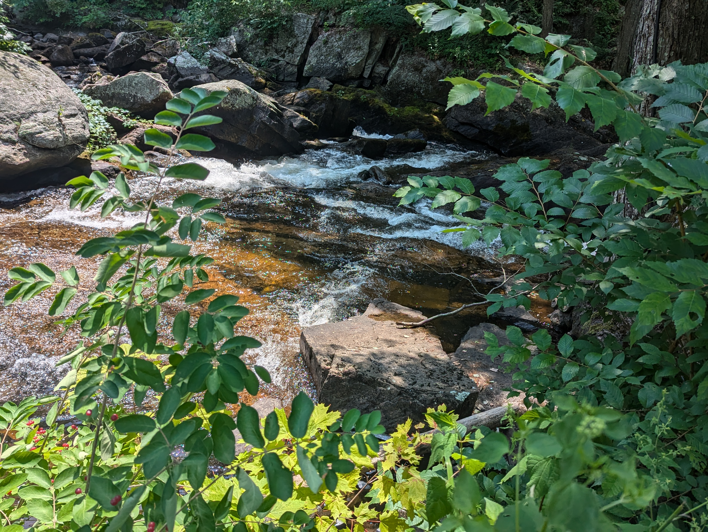
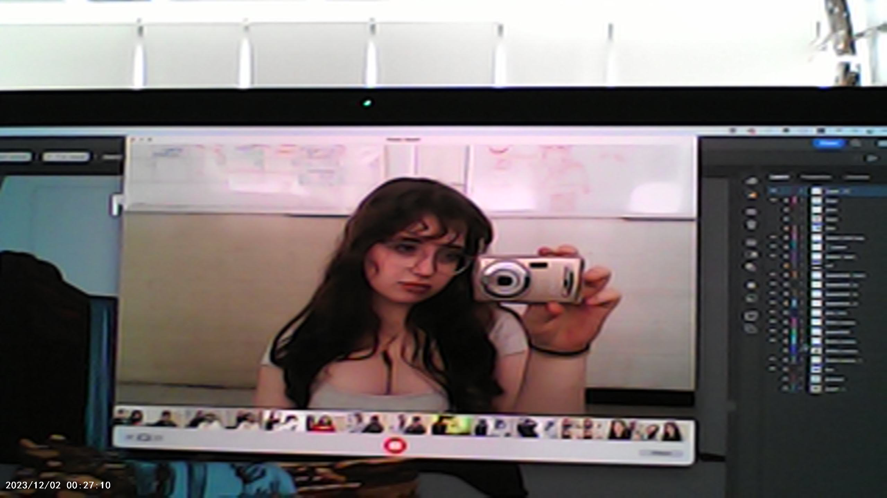

Hi! My name is Josephine Polevoy and I am a 17 year old artist from NYC. I am currently a senior at Fiorello H. LaGuardia High School and an incoming freshman at Brandeis University. I am skilled within the Adobe Suite, with works created in Adobe Photoshop, Adobe Illustrator and Adobe InDesign.Additionally, I am skilled in acrylic paint, oil paint, watercolor paint, guash paint and more.
